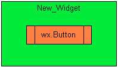
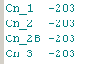

march 2008
Bind - Skip Events 
Introduction
Despite all explanations in books, on the web and in newsgroups, I again bumped into a problem with event bindings. So after solving my problem, I decided to write another view on events. I'm not a programmer, just a user and therefor my notes on this page may not be exactly correct, nor may I use the right words. It's also not a complete overview of bindings, e.g. there seems to be two distinct event types: Basic Events and Command Events, which behave different (but I don't know what the difference is, moreover I don't even know when I deal with one or the other).
There are numerous pages on the web, describing the event handling, and the best ones I found (although not solving my problem) are:
This document handles the following issues and tries to give a cookbook for event binding:
For the general binding method:
<destination>.Bind ( <event-type>, <handler>, [ <event-source> ] )
The environment
I needed a float / logarithmic slider, so (with the help of Robin Dunn, thanks !!), I created a new widget in a very simple way. I derived the new widget from a wx.Panel and created the slider in the __init__ of the derived panel. All functionality of the logarithmic slider was placed in the derived panel.
For simplicity I'll use in this document a wx.Button (representing the logarithmic slider) and added no extra functionality to that button. To make small enough images, I used some shortcuts in this document, like "s = self", which is certainly not advised for real programs. So here's what the new widget looks like:

Now I create an application, which contains the new widget and some other widgets. And because that application is created dynamically by another application, I need a general way to handle events, so I just have one event handler in my main program for all events. The program distinguishes between the different sources by maintaining a table of object-ID's. The problem was that although all normal control events were triggered and handled well, the event of the new widget wasn't handled at all.
Knowing the cause of my problem, I also know that the problem has nothing to do with the normal controls, so I leave button B2 out in the further discussion. Let's first look to the path along which the event is evaluated: on the left side you see the code of the upper hierarchical frame, on the right the code of the new widget.
Leaving out one of the bindings, doesn't break the chain, but just makes it shorter, some examples:
|
All bindings |
Commenting line 13 |
Commenting line 47 |
Commenting line 13, 47 |
|
|
 |
Leaving out one of the event.Skip() calls, does end the chain, some examples :
|
All bindings |
Commenting line 26 |
Commenting line 52 |
|
The problem
Now I always thought that specifying the event-source was a very good idea. So let's change line 47, and specify the event-source:
We see that the event handler "On_1B" is never called !! Why ??
After debugging the program, the answer is very simple and (after all very) obvious: the ID of the New_Widget is not the ID of the Button.
Now you can probably say, that the New_Widget is a lousy solution for creating new widgets, but it's a very easy one (certainly for non-programmers). Because PyLab_Works should be as easy as possible and hide as many as possible details from the core, we accept this as perfect valid solution.
The Solution
The solution (or work around) consists of two extensions, one in the core of PyLab_Works and the other into a small extension of the new widget:
|
Core Extension |
New Widget Extension |
Conclusion:
These conclusions might be too simplistic in general cases, but they certainly are valid within the PyLab_Works framework.